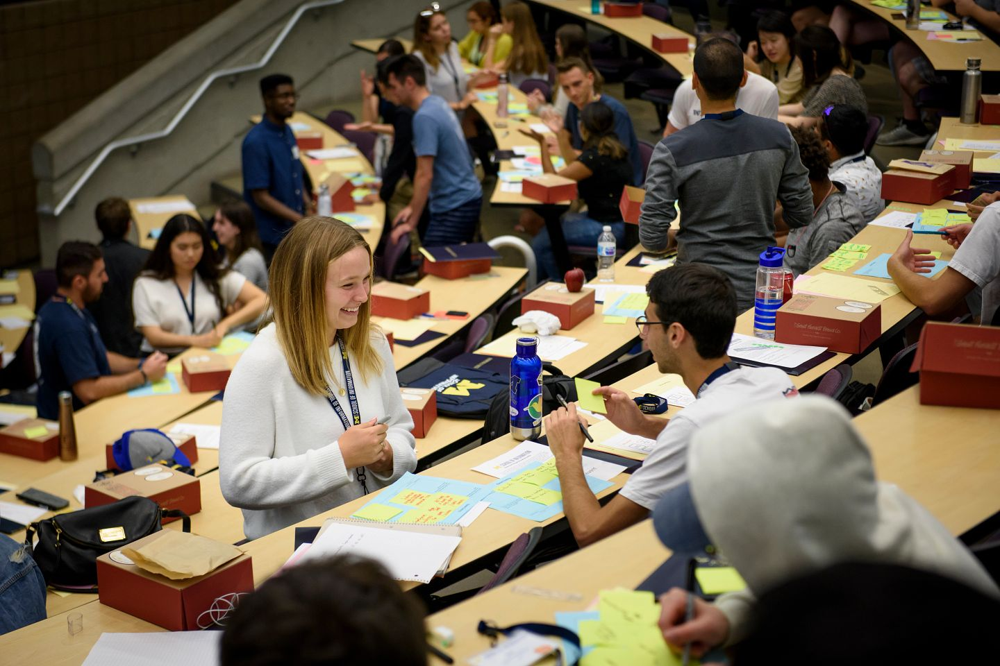
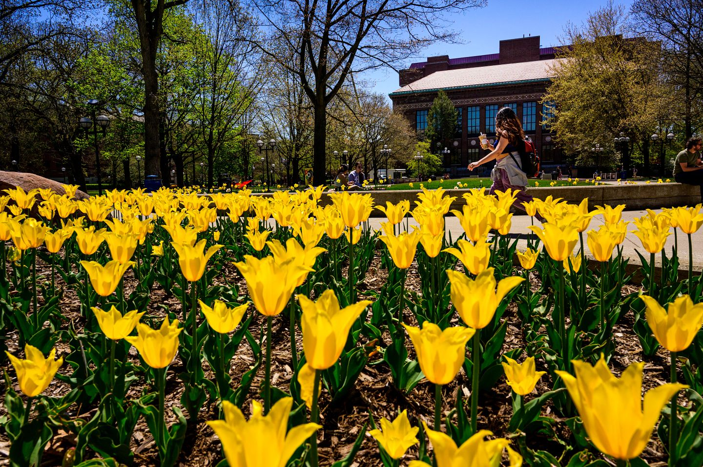

About
CAPS (Counseling and Psychological Services) is available for any student who may be struggling with mental health related issues.
UM's CAPs services range from peer counseling to teletherapy and more: peer counseling may suit students who want to talk to somebody a similar age from a similar background, but services like teletherapy and Let's Talk utilize trained professionals for students to talk with.


Available resources
There are many different resources available for students seeking assistence from CAPS, whether that entails peer counseling, teletherapy, or just general help through adjusting to a new school.
Scope of CAPS services
CAPS provides high-quality clinical, preventative, and training services for UMSI students.
Let's Talk
Let's Talk is a program that gives students the opportunity to meet with trained counselors for free. These meetings help with preliminary advice.
Togetherall
Togetherall is an online, professionally moderated program where students can anonymously talk online. Togetherall includes self-directed courses, assessments, and journals and is integrated with our CAPS programs.
CAPS hours
Monday-Thursday: 8am-6pm
Friday: 8am-5pm
Saturday-Sunday: Closed